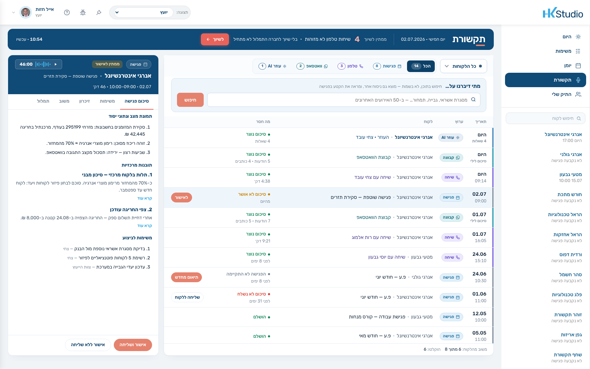
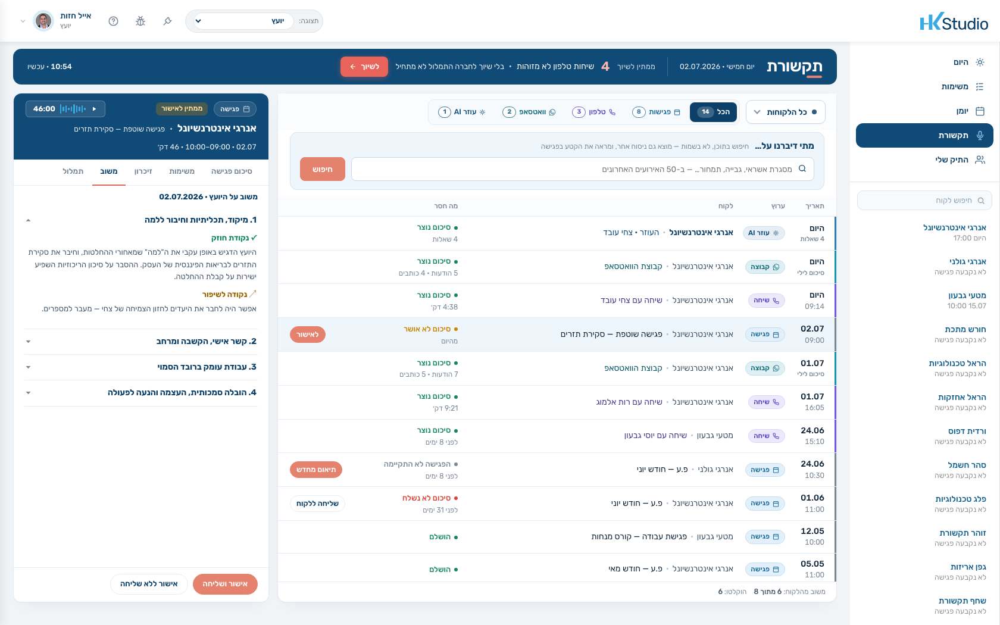
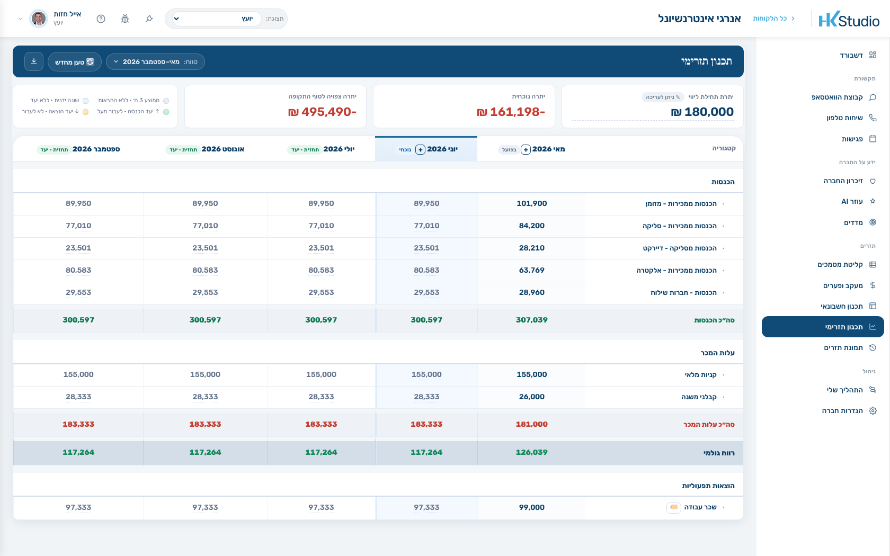
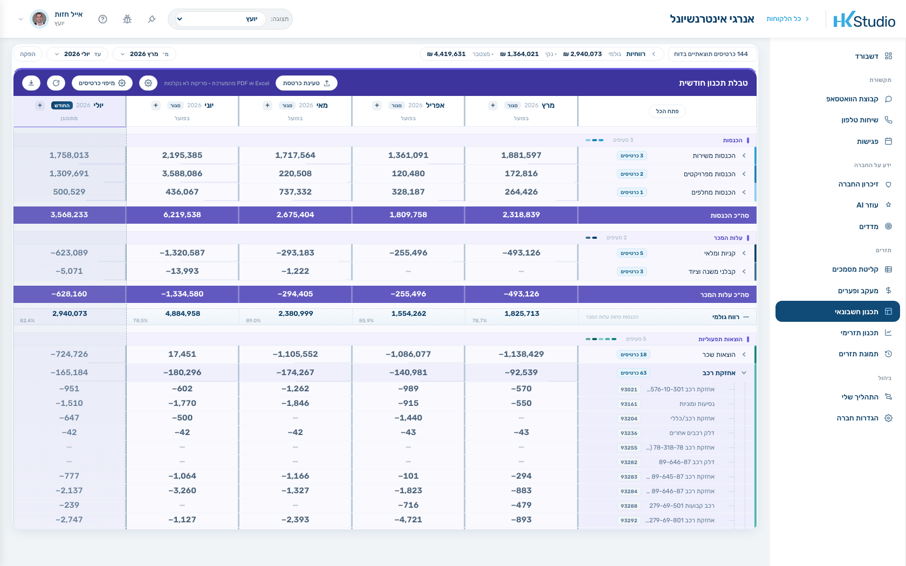
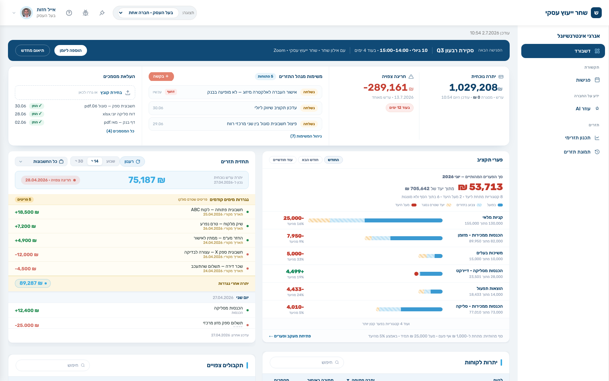

5הצד של הלקוחדשבורד, תקציר בוקר ועוזר בוואטסאפ —
הכל בשם המשרד שלך
+ניהול המשרדיועצים והרשאות, חיוב, לידים,
תבניות הודעות ובקרת איכות
זה השקף שנותן להם את המפה. לומר: "אני אעבור על חמשת החלקים לפי הסדר הזה, ואראה לך כל אחד במערכת עצמה." אם הם עוצרים בשאלה על חלק מסוים — לקפוץ לשקף שלו.
חלק 1 · תפעול חודשי
התפעול מבוצע על ידי HK, לא על ידך
מנהל תזרים של HK מריץ לכל חברה חמישה שלבי עבודה — קיטלוג תנועות, מוטבי שיקים, נגררות ולא־צפויות, הודעות מהלקוח והזנות עתידיות — ואחריהם חמש בדיקות שסוגרות את החודש.
חמישה שלבי עבודה · חמש בדיקות · כל חודש
להדגיש שזה שירות ולא פיצ׳ר — אדם שמפעיל מערכת. זה ההבדל מכל כלי תוכנה שהם מכירים. אם שואלים על הוואטסאפ: מנהל התזרים עונה ללקוח על תפעול שוטף, בשם המשרד, ואליהם מגיע רק מה שדורש יועץ — כולל תזכורת שנתקעה שלוש פעמים.
חלק 2 · זיכרון לקוח
המערכת מתחזקת פרופיל חי לכל לקוח
שתים־עשרה קטגוריות — מצב תזרימי, פרופיל עסקי, כאבים, יעדים, שביעות רצון, סגנון תקשורת ועוד — מתעדכנות אוטומטית מכל פגישה, שיחה והודעה. לכל קטגוריה פרומפט משלה והגדרה מי רשאי לראות אותה.
מעגל החברה ומעגל אישי — מה שפנימי לא נחשף ללקוח
להראות קטגוריה אחת פתוחה. ולומר בכנות: אחרי שנה של עבודה, הזיכרון הזה הוא נכס של המשרד שלהם ואין לו תחליף — זו גם הסיבה שהוא נשמר בטקסט קריא ולא בקופסה שחורה.
חלק 3 · תקשורת
ארבעה ערוצים, מסך אחד, אותם תוצרים
פגישות, שיחות טלפון, קבוצת הוואטסאפ וההתכתבות עם העוזר יושבות ברשימה אחת. כל פריט מייצר את אותם תוצרים: סיכום, משימות מוצעות ועדכוני זיכרון. ג׳וב לילי סוגר כל יום.

פגישה · שיחת טלפון · קבוצת וואטסאפ · עוזר AI
לסנן לקוח אחד ולהראות. הנקודה: השאלה של יועץ היא "מה קורה עם הלקוח הזה", ולכן זה מסך אחד ולא ארבעה. אם שואלים על התמלול — שיחה בלי שיוך לחברה לא מתומללת בכלל, מטעמי פרטיות.
חלק 3 · תקשורת — הפגישה
הכנה שנבנית מחדש בכל פתיחה
דף ההכנה לא נשמר ולא נכתב מראש — הוא נגזר ברגע הפתיחה מהזיכרון החי, מהמספרים העדכניים ומהמשימות הפתוחות: מה סוכם בפעם הקודמת, מה השתנה מאז, ואיך מדברים עם האדם הזה.
«פתח במספרים — צחי מאבד סבלנות מהקדמות»
להקריא את ההנחיה האישית מהמסך — היא באה מקטגוריית סגנון התקשורת בזיכרון. אם יש זמן: להראות את מסך הפגישה אחרי — תמלול, סיכום, משימות לאישור.
חלק 3 · תקשורת — משוב מקצועי
המערכת מנתחת גם את ניהול הפגישה שלך
אחרי כל פגישה נוצר משוב על עבודת היועץ בארבעה צירים: מיקוד וחיבור ל«למה», הקשבה ומתן מרחב, עבודה ברובד הסמוי, והובלה והנעה לפעולה. המשוב גלוי ליועץ בלבד ואינו נשלח ללקוח או למנהל.

ארבעה צירי משוב · לעיני היועץ בלבד
זה החלק שאין לו מקבילה בשוק. לומר את זה עניינית ולא כהתפארות: רוב הכלים מודדים את הלקוח; כאן יש גם משוב על עבודת היועץ. מי שזה לא מעניין אותו — פשוט לא נכנס לטאב.
חלק 4 · דוחות פיננסיים
תכנון קדימה ודוח רווח והפסד — מוכנים
תכנון תזרימי לחודשים קדימה עם יעד לכל קטגוריה ויתרות שמתגלגלות; ודוח רווח והפסד שנבנה מהכרטסת האמיתית של רואה החשבון — בדוגמה שבמערכת: 14,083 תנועות שהפכו ל־631 כרטיסים.

תכנון תזרימי — יעד לכל קטגוריה, וחריגה שנראית לפני שהיא קורית

תכנון חשבונאי — ה־AI ממפה מבנה, חיבור הסכומים רץ בקוד
ההפרדה חשובה ליועצים: ה-AI מסווג שמות וממפה מבנה בלבד; כל חיבור של סכומים רץ בקוד דטרמיניסטי עם בדיקות ביקורת. זה מה שמאפשר להציג את הדוח ללקוח בלי לבדוק אותו שורה־שורה. יש גם מעקב תקציב ומדדים לא־פיננסיים.
חלק 5 · הצד של הלקוח
הלקוח מקבל מערכת בשם המשרד שלך
לבעל העסק יש דשבורד משלו שנפתח בתקציר בוקר — פסקה שנכתבת כל בוקר מהזיכרון ומיתרות הבנק העדכניות — ולצדה יתרה, חריגה צפויה, משימות פתוחות והעלאת מסמכים. וכן עוזר בוואטסאפ שיודע את המספרים שלו.

«היתרה 75,187 ₪ — צפויה חריגה ב־11.07 אם ההעברה לא תבוצע»
סיפור אמיתי מהמערכת: אחרי התראת חריגה הלקוח שאל את העוזר "מה זאת אומרת חריגה?" — וזה הפך למשימה ליועץ ולשורת זיכרון. מה שהלקוח שואל מגלה מה מטריד אותו.
ומעל הכל · ניהול המשרד
שכבת ניהול למשרד שגדל
מה שמאפשר להעביר את השיטה בין יועצים: הרשאות ותפקידים, מחזור חודשי אחיד, תבניות הודעות מאושרות, ובקרת איכות על התוצרים של ה־AI.
יועצים והרשאותחיוב וגבייהלידים11 סוגי הודעות אוטומטיות פר איש קשרשיוך מספרי טלפון לחברותקטגוריות קיטלוג ובסיס ידעבדיקות איכות על תוצרי ה־AIמשימות ובקשות ל־HKעזרה מותאמת בכל מסך
השיטה מוגדרת ברמת המשרד — מחזור חודשי, שלבים ויעדים — כך שיועץ
חדש נכנס לשיטה קיימת ולא ממציא אותה מחדש.
לעבור מהר — זה לא ליבת הפגישה. המסר: השיטה מוגדרת ברמת המשרד, כך שיועץ חדש נכנס לשיטה קיימת ולא ממציא אותה מחדש.
מה זה משנה בפועל
הזמן שיורד מהיועץ, פר לקוח לחודש
פעילות
היום
עם HK
תפעול תזרים — קיטלוג, התאמות, רדיפה אחרי חומר
4–8 שעות
0
הכנה לפגישה
כשעה
דקות
סיכום ומשימות אחרי פגישה
כחצי שעה
דקות
מענה שוטף בוואטסאפ
1–2 שעות
רק מה שדורש יועץ
סה״כ פר לקוח לחודש
7–10 שעות
1–1.5 שעות
80 שעות עבודת לקוחות בחודש מכסות היום 8–10 לקוחות. כשהתפעול יורד — אותן שעות מכסות 25–30.
כאן לעצור ולעשות את החשבון על המספרים שלהם: כמה לקוחות יש להם, כמה שעות הם מעריכים שהתפעול לוקח, וכמה שווה שעה שלהם. המספר צריך לצאת מהם, לא ממני.
איך מתחילים
לקוח אחד, חודש הרצה
1בוחרים לקוחעדיף כזה שהתפעול שלו כבד — שם ההבדל נראה כבר בחודש הראשון
2ישיבת פתיחה אחתחשבונות בנק, כרטסת אם יש, קטגוריות ואנשי הקשר שמקבלים הודעות
3HK מריצה לו חודשקיטלוג, בדיקות, תזרים מוכן — ואתה מגיע לפגישה ורואה מה השתנה
אין פרויקט הטמעה ואין חודש שבו עובדים כפול. אפשר להריץ במקביל לשיטה הקיימת, כמה זמן שתרצה.
הבקשה קונקרטית וקטנה: לקוח אחד. אם אפשר — לבחור אותו יחד עכשיו, בפגישה. זה מה שהופך את הסיום להתחלה של משהו ולא לשאלה פתוחה.